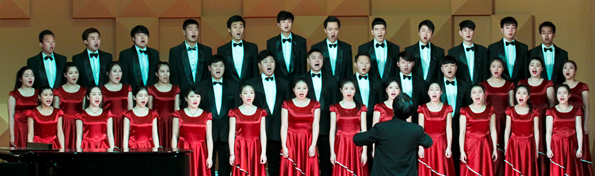

- 


学院简介 SCHOOL
荆楚理工学院是2007年3月经教育部批准成立的一所省属全日制普通高等学校，由荆门职业技术学院和沙洋师范高等专科学校合并组建而成，有30余年办高等教育的历史。
学校位于湖北省荆门市中心城区白龙山下，依山傍水，风景秀美，文化历史底蕴深厚，是一座山水园林式大学。学校一校区办学，校园占地面积2200余亩，校舍建筑面积30余万平方米。教学科研仪器设备总值9000余万元，校园无线网络覆盖全校。图书馆馆藏纸质图书124万册，采用了自动化管理系统（ILASⅢ），拥有各类电子资源数据库10个。 学校教学科研设施齐备，宿舍区运动场集中连片，生活便利，条件优良，是读书求学理想之处。
学校设有16个教学学院（部），开设本科专业37个，专科专业15个，涵盖理、工、农、医、文、教、管、艺等8大学科门类。有全日制普通在校生13000余人，其中本科生9700余人。学校建有校外实习实训基地111个，有附属医院1家，教学医院2家。
学校现有在编教职工1100余人，其中专任教师721人。专任教师中，有教授、副教授等高级职称人员385人，博士、硕士624人。享受国务院及湖北省政府特殊津贴的专家5人，荆门市把关人才18人。
学校现有湖北省“十三五”优势（特色）学科群1个（绿色化工与制药工程）、湖北省“十二五”重点（特色）学科1个（化学工程与技术）、湖北省“十二五”重点（培育）学科1个（食品科学与工程）。机械设计制造及其自动化、化学工程与工艺、印刷工程、食品科学与工程、计算机科学与技术等5项为湖北省本科高校“专业综合改革试点”项目。化学工程与工艺、食品科学与工程、计算机科学与技术、电气工程及其自动化、植物科学与技术等5项为湖北省高等学校战略性新兴（支柱）产业人才培养计划本科项目。物联网工程、小学教育等2项为湖北省普通本科高校“荆楚卓越人才”协同育人计划项目。有教育部产学合作协同育人项目6项，“荆楚理工学院-中兴通讯信息学院”为湖北省高校试点学院改革项目。有国家级基地1个（荆楚理工学院-中印南方印刷有限公司工程实践教育中心），湖北高校省级示范实习实训基地1个（湖北三宁化工股份有限公司），湖北高校省级大学生校外实习实训基地3个（中印南方印刷实习实训基地、湖北省金龙泉集团有限公司食品科学与工程实习实训基地、荆门市东宝区教育局教师教育实践基地）。学校是湖北省服务外包人才培养（训）基地。有省级精品课程8门、省级精品视频公开课1门、省级精品在线课程1门。大学生创新训练项目国家级41项、省级154项。省级优秀学位论文141篇。承担省级以上教育教学研究课题42项、校级课题200余项，获省级教学成果奖二等奖2项、三等奖6项。
学校建有一批省市科研平台。其中，湖北省协同创新中心1个，湖北省重点实验室1个，湖北省工业技术研究院1个、湖北省校企共建技术研发中心3个、湖北省新农村发展研究院1个，湖北省人文社科重点研究基地1个，湖北省知识产权培训中心1个，荆门市产业孵化基地4个。学校拥有抗肿瘤药物的新品开发及合成新工艺研究等4个省级科研创新团队，先后承担国家、省市科研项目431项。其中，国家自然科学基金和国家社会科学基金4项。获省市科技、社科成果奖55项，拥有各类专利179件。学校科技成果“流化床催化氧化危废处理技术”被湖北省科技厅组织的专家鉴定为“国内领先水平”，在2017年湖北省高校科技人员创业大赛中获二等奖。学校教师在核心期刊发表论文882篇，被SCI、EI、ISTP权威检索性期刊收录252篇。《荆楚理工学院学报》先后被评为全国优秀社科学报、全国地方高校优秀学报、全国质量进步社科学报，其“传记文学研究”栏目先后被湖北省高等学校学报研究会和湖北省新闻出版广电局评为“特色栏目”；《荆楚学刊》先后被评为全国优秀社科学报、湖北省优秀期刊。
学校先后与武汉工程大学、湖北工业大学等省内高校开展联合培养硕士研究生，与爱尔兰高威梅奥理工学院、泰国乌汶大学、菲律宾德拉萨大学、西班牙巴塞罗那大学、澳大利亚西澳理工学院、美国荷晶大学、芬兰瓦萨应用科技大学、美国约翰杰刑事司法学院、法国卡昂大学等国外高校建立了校际交流合作关系。开设有口腔医学、市场营销和计算机科学与技术三个全英文授课本科专业，并针对留学生汉语言水平，开设有国际汉语初级班、中级班和高级班。
学校坚持立足荆门，面向湖北，辐射全国，服务地方经济社会及相关行业产业的服务定位，坚持教学工作中心地位，围绕培养具有良好的思想政治素质和人文素养、扎实的学科专业基础、较强的创新创业精神和实践能力的应用型高级专门人才这一目标，探索构建学校教育和社会教育二大协同育人体系，打造通识教育课程、专业主干课程、个性发展课程三大课程平台，实现人才培养过程中通识教育与专业教育的融合、全面发展与个性发展的结合、应用性与学术性的结合、信息技术与教育教学融合的四个融合，形成了“1234”的应用型人才培养模式。学校先后被授予国家节约型公共机构示范单位、湖北省高校毕业生就业统计规范管理先进单位、湖北省平安校园、湖北省文明单位（校园）等荣誉称号。2014年，学校成为湖北省首批地方本科院校转型发展试点学校；2015年，学校成为首批“教育部-中兴通讯ICT产教融合创新基地”。2016年，学校顺利通过教育部本科教学工作合格评估。
| 中国音乐学院 | | | 中央音乐学院 | | | 湖北工业大学艺术.. | | | 武汉工程大学艺术学院 | | | 长江大学艺术学院 | | | 湖北美术学院 | | | 武汉音乐学院 | | | 华中师范大学 |
荆楚理工学院艺术学院 | 地址:荆门市象山大道33号 电话: 0724-2313811 备案编号：鄂ICP备05003328号